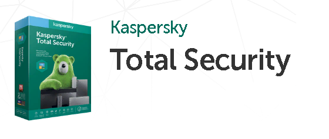

Вредоносные программы довольно разнообразны. Однако, их можно разбить на группы, чтобы было легче понять, с каким видом заразы имеешь дело, и как с ним бороться. Классификация представлена ниже:
| Вирус | Червь | Троян |
| Руткит | Бэкдор | Загрузчик |
Понятие вредоносных программ В законодательстве России отсутствует определение вредоносных программ. Приведенное выше определение вредоносных программ не в полной мере соответствует реалиям сегодняшнего дня. Появились программы, действия которых нельзя классифицировать по ст. 272 или 274 УК РФ, но которые мировым сообществом специалистов по информационной безопасности и сотрудниками антивирусных компаний уже отнесены к разряду вредоносных. Поэтому при классификации вредоносных программ будем исходить из главного классифицирующего признака в широкой трактовке – нанесения вреда работе пользователя. Более донкретную информацию вы можете узнать во вкладке "Классификация вирусного ПО" Наиболее полпулярные антивирусы на данный момент:
- Лучший антивирус для Windows Лаборатория Касперского Internet Security Multi-Device
- Лучший антивирус для Андроид AVG AntiVirus for Android Smartphones
- Лучший антивирусник для сервера Avira Antivirus Server
- Как выбрать антивирус для компьютера и смартфона
- Dr.Web Security Space – универсальный продукт для ПК
- ESET NOD32 Platinum Edition – не нагружающий систему вариант
- Avast! Internet Security для комплексной защиты ПК
- Panda Mobile Security – мобильный антивирус для смартфона на Андроиде или для планшета
- Symantec Mail Security for MS Exchange AntiVirus and Antispam – продукт средней эффективности